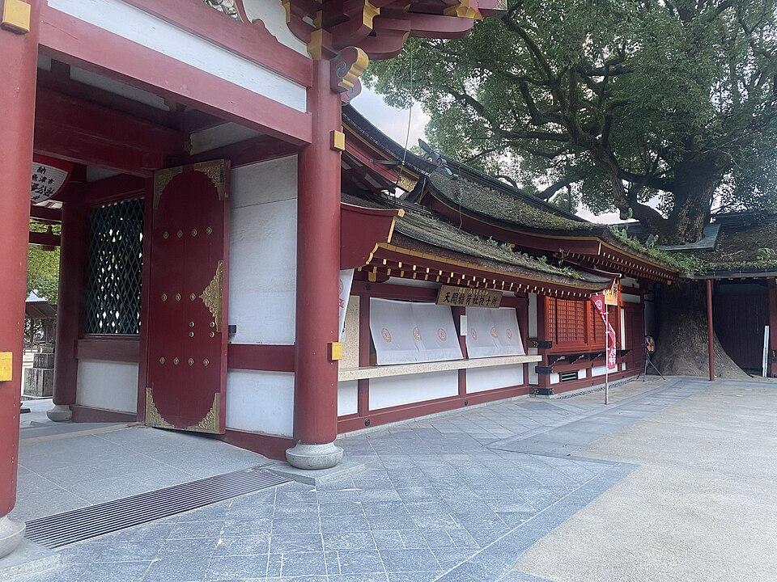

重要文化財
学問の神様・菅原道真公を祀る聖地
太宰府天満宮は、菅原道真公（天神さま）の御墓所の上に建てられた神社であり、全国約10,000社ある天満宮の総本社として称えられています。
年間約1,000万人もの参拝者が訪れ、受験合格や学業成就を願う人々の参拝が絶えません。境内には飛梅伝説で有名な御神木や数々の史跡が残されています。
太宰府天満宮の主な見どころ
御本殿と飛梅
桃山時代の華麗な建築様式を残す重要文化財の御本殿と、道真公を追って飛んできたとされる伝説の御神木「飛梅」です。
太鼓橋と心字池
「過去・現在・未来」を表す3つの橋を渡ることで、心身を清めて参拝へ向かう趣のあるスポットです。
参道と名物「梅ヶ枝餅」
賑やかな参道には多くのお土産店やカフェが立ち並び、焼きたての香ばしい名物「梅ヶ枝餅」を味わえます。
施設情報
| 所在地 | 福岡県太宰府市宰府4丁目7-1 |
|---|---|
| 開門時間 | 6:00～19:00（季節や曜日により19:30または20:00まで延長あり） |
| 休業日 | 年中無休 |
| 拝観料 | 無料（宝物殿・菅公歴史館などは別途有料） |
| アクセス | 西鉄太宰府線「太宰府駅」徒歩約5分 / 博多バスターミナルより直行バス（旅人）で約40分 |